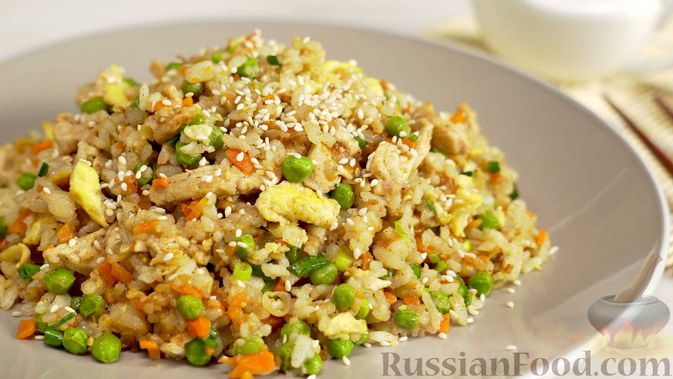
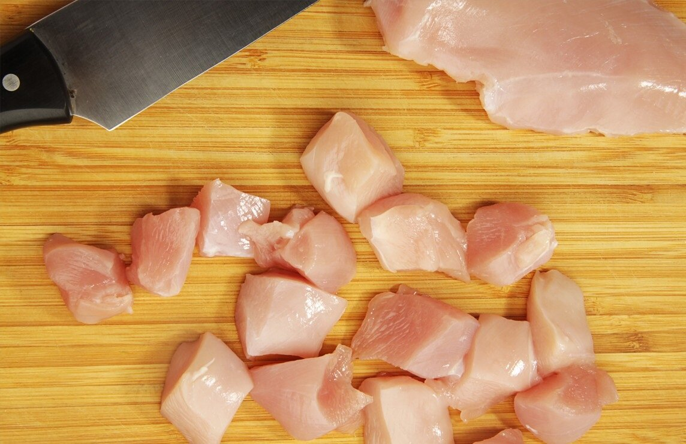
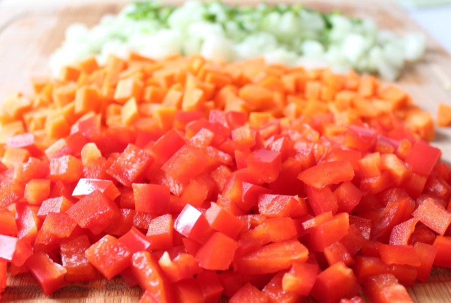
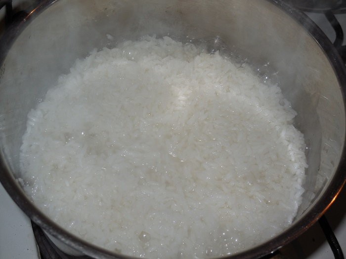
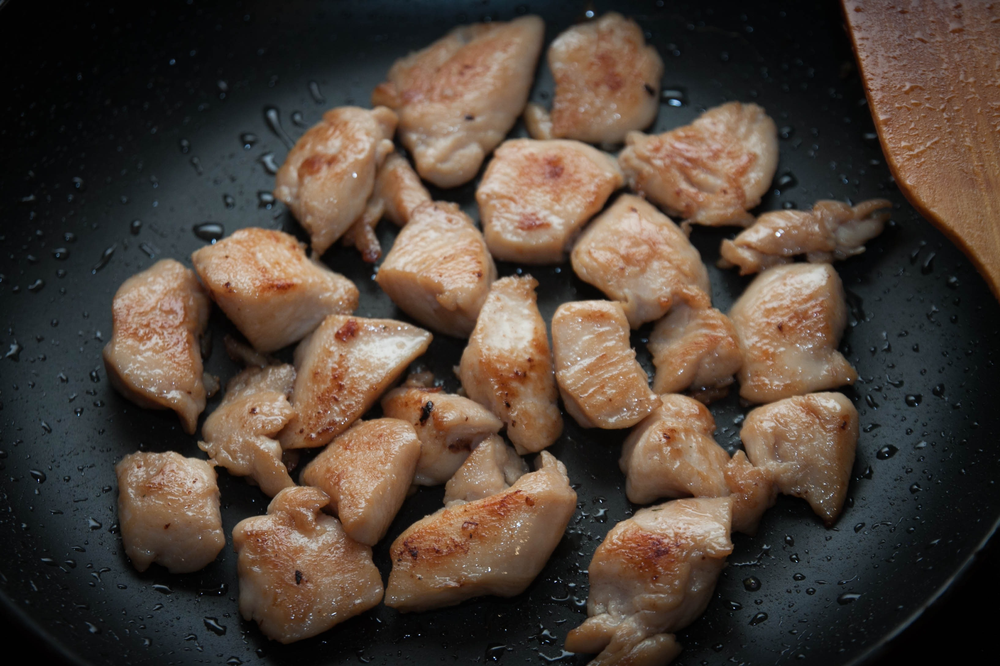
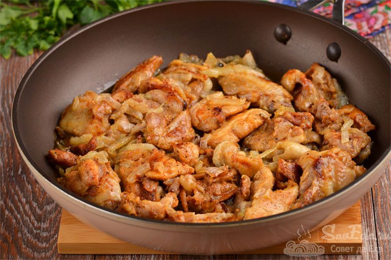
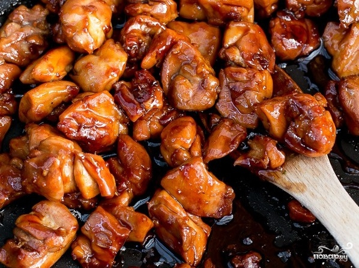

Нуркова Ульяна Владиславовна. Рецепт
Как в Китае: курица в соевом соусе с рисом
Вниз
Рис с курицей, овощами и обжаренным яйцом - одно из самых популярных блюд в Таиланде и Китае.
На обед или на ужин всего за 30 минут вы сможете приготовить это вкусное, ароматное и сытное блюдо.

Ингредиенты
Основные ингредиенты
- 500 г. куриного филе
- 3 ст. ложки соевого соуса
- 2 ст. ложки растительного масла
- 200 г. риса (басмати или жасмин)
- 400 мл. воды
- Соль и перец по вкусу
- Овощи (можно использовать любые на ваш вкус)
| Овощи |
Количество |
| Болгарский перец |
1 шт. |
| Морковь |
1 шт. |
| Брокколи |
150 г. |
| Лук |
1 шт. |
| Чеснок |
2 зубчика |
- 1. Подготовка ингредиентов:
- • Курицу нарежьте кубиками

- • Овощи промойте и нарежьте: перец — кубиками, морковь — соломкой,
брокколи — на соцветия, лук — полукольцами,
чеснок — мелко порубите.

- 2. Приготовление риса:
- • В кастрюле доведите до кипения 400 мл воды,
добавьте рис и немного соли.

- • Уменьшите огонь, накройте крышкой и варите 15-20 минут до готовности.
Затем снимите с огня и дайте настояться под крышкой.
- 3. Обжарка курицы:
- • В сковороде разогрейте растительное масло на среднем огне.
- • Добавьте курицу и
обжаривайте до золотистой корочки (примерно 5-7 минут).

- • Затем добавьте чеснок и лук, жарьте еще 2-3 минуты.

- 4. Добавление овощей:
- • К курице добавьте морковь, болгарский перец и брокколи.
Обжаривайте все вместе еще 5-7 минут, пока овощи не станут мягкими.
- 5. Заправка:
- • Влейте соевый соус, перемешайте и готовьте еще 2-3 минуты.
Попробуйте на соль и перец, при необходимости добавьте по вкусу.

- 6. Подача:
- • На тарелку выложите порцию риса,
сверху разместите курицу с овощами. Подавайте горячим.
Вверх